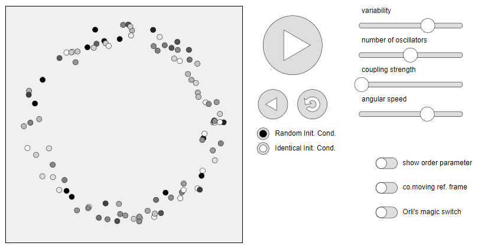

Table of Contents
Differential Equations

NARROW DISPLAY WARNING
You are most likely using a tablet or mobile device in portrait orientation. This website is best viewed using a typical computer screen with the browser window maximized.
Viewing this website in portrait orientation can cause problems with equations being longer than the screen width (you can scroll to the right), images being poorly sized, and the font size of maths text being much smaller than regular text. If your only option is a tablet or mobile device, your viewing experience will be better if you view this website in landscape orientation. You might need to refresh the page to fix any problems after rotating.
From your first course in ordinary differential equations, you've learned that solving just linear ODEs isn't always possible. Then there's nonlinear ODEs which are so impossibly difficult to solve that people don't even try to solve them in general. The problem is nonlinear ODEs are still extremely important and show up in all sorts of science disciplines and applications. Analysing and making meaningful statements about nonlinear systems is the focus of dynamical systems theory. Since nonlinear dynamical systems are often impossibly difficult to solve, dynamical systems theory focuses on qualitative rather than quantitative statements about a dynamical system. An example of a quantitative description is solving for an exact solution and the ability to calculate the exact values of the ODE variables at any value of the independent variable. A qualitative description would be more like the system will stabilize at a finite value. (The value might not be known, but its existence and that the system will asymptotically approach the value can be proven.)
Some interesting highlights from dynamical systems are:
Phase portraits of nonlinear systems of ODEs, such as the Simple Pendulum.
Limit cycles, such as in the van der Pol Oscillator where all initial conditions converge to a periodic solution.
Bifurcations, such as a Hopf bifurcation where a fixed points changes stability and a limit cycle emerges from the fixed point.
Iterated Maps, which make for pretty Cobweb Plots, and higher dimensional maps, like the Hénon map.
Strange Attractors like the Lorenz Attractor and the Rössler Attractor.
If you're interested in learning more, there's "Nonlinear Dynamics and Chaos" by Steven H. Strogatz, which is the standard textbook for a first course in dynamical systems theory. There's also recorded lectures by the author filmed at Cornell University in Spring 2014 which closely follow the textbook, as well as a solutions manual so you can check your solutions to the odd problems.
Taken directly from the playlist description:
This course of 25 lectures, filmed at Cornell University in Spring 2014, is intended for newcomers to nonlinear dynamics and chaos. It closely follows Prof. Strogatz's book, "Nonlinear Dynamics and Chaos: With Applications to Physics, Biology, Chemistry, and Engineering."
The mathematical treatment is friendly and informal, but still careful. Analytical methods, concrete examples, and geometric intuition are stressed. The theory is developed systematically, starting with first-order differential equations and their bifurcations, followed by phase plane analysis, limit cycles and their bifurcations, and culminating with the Lorenz equations, chaos, iterated maps, period doubling, renormalization, fractals, and strange attractors.
A unique feature of the course is its emphasis on applications. These include airplane wing vibrations, biological rhythms, insect outbreaks, chemical oscillators, chaotic waterwheels, and even a technique for using chaos to send secret messages. In each case, the scientific background is explained at an elementary level and closely integrated with the mathematical theory. The theoretical work is enlivened by frequent use of computer graphics, simulations, and videotaped demonstrations of nonlinear phenomena.
The essential prerequisite is single-variable calculus, including curve sketching, Taylor series, and separable differential equations. In a few places, multivariable calculus (partial derivatives, Jacobian matrix, divergence theorem) and linear algebra (eigenvalues and eigenvectors) are used. Fourier analysis is not assumed, and is developed where needed. Introductory physics is used throughout. Other scientific prerequisites would depend on the applications considered, but in all cases, a first course should be adequate preparation.
Both the second and third editions of the textbook are compatible with the recorded lectures, which goes through all 12 chapters. The third edition has an additional chapter 13 on the Kuramoto model, which has to do with synchronization.
Synchronization can happen when rhythmic things influence each other, either directly or through an intermediary, that nudge the population in a certain way. Examples include fireflies flashing, heart cells contracting in unison, neurons in epileptic seizures, coupled lasers, metronomes on a cart, and even people in certain cultures clapping in unison after clapping randomly at first. When analysing these coupled collections of things with rhythmic behaviour, one question to ask is whether or not a system can synchronize, and another is what physical characteristics are necessary for synchronization. For instance, there are certain drugs that can cause seizures. The drugs probably aren't changing which neurons are connected to each other (unless it's causing damage), but by altering how strongly neurons communicate with each other, a seizure could become more likely.
For something more hands on, here's a fun interactive simulation of synchronization, created by Dirk Brockmann and Steven Strogatz, of a system called the Kuramoto model. Taken directly from the Ride my Kuramotocycle! webpage:
This explorable illustrates the Kuramoto model for phase coupled oscillators. This model is used to describe synchronization phenomena in natural systems, e.g. the flash synchronization of fire flies or wall-mounted clocks.
The model is defined as a system of $N$ oscillators. Each oscillator has a phase variable $\theta_n(t)$ (illustrated by the angular position on a circle below), and an angular frequency $\omega_n$ that captures how fast the oscillator moves around the circle. Initially oscillators are distributed randomly along a circle (like watches that show different times) and have different frequencies (like watches that tick at different speeds). The model introduces an interaction between oscillators that naturally yields perfect or partial synchrony.
The following image is a static screenshot of the Ride my Kuramotocycle! webpage, but clicking the image will redirect you to the actual webpage.
